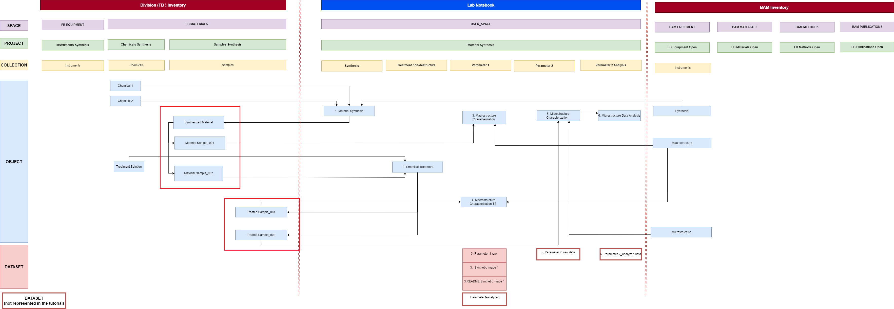

This tutorial shows division members who have been assigned the
User role in the Data Store how to register inventory
objects used in the synthetic “Material Synthesis” example. You will
review the inventory structure prepared by Data Store Stewards, register
one Sample manually, and batch-register additional samples in the
FB Inventory.
What you will learn
Locate inventory projects, collections, and objects prepared by Data Store Stewards.
Distinguish division-specific resources in the BAM Inventory from those in the FB Inventory.
Register one Sample and identify yourself as the co-responsible person.
Batch-register Sample objects using an Excel file.
Distinguish an Excel file for batch registration from one used for batch update.
Before you begin
This tutorial is designed for openBIS version 20.10.12 and assumes that
the inventory structure has already been prepared by a Data Store
Steward. You must have the User role for the relevant
FB Inventory projects.
If you encounter problems, contact the Data Store team
Tutorial sequence
Tutorial sequence: This tutorial is
Step 4 of 5. It follows
“Prepare inventory structures for your division”
completed by a Data Store Steward from your division
and prepares the Sample objects required for
“Connect Lab Notebook data with Inventory items.”
Key Concepts
Inventory in the Data Store
The Data Store has two Inventory sections:
FB Inventory and BAM Inventory.
By default, objects in the FB Inventory are available to the relevant
division. Access can also be granted to collaborators from other
divisions. Objects in the BAM Inventory are visible to BAM members with
access to the Data Store.
Each division has four FB Inventory spaces:
Equipment, Materials,
Methods, and Publications.
These spaces are identified by the division number, for example,
X.1 Equipment and X.1 Materials.
The BAM Inventory contains institution-wide spaces, such as
BAM Equipment, with predefined division-specific projects,
such as X.1 Equipment Open.
Inventory spaces organize tangible and intangible resources used or
generated during research, such as instruments, chemicals, samples,
software, and standard operating procedures (SOPs). The
Publications space is optional and does not replace
Publica for storing publication metadata.
What should be registered?
Not every item used by a division needs to be registered in the Data
Store. Register items whose metadata is needed to understand, trace, or
reproduce research data. For example, an instrument may need to be
registered when metadata such as its calibration date is relevant for
interpreting or certifying measurement results.
Registered inventory objects can be connected with experimental steps
in the Lab Notebook using parent-child relationships, making the
resources and outputs associated with research data traceable.
The Data Store contains two Inventory sections:
BAM Inventory and FB Inventory.
Select the Inventory tab and use the left-hand
navigation menu to browse their contents.
The BAM Equipment space contains a predefined project
for each division, such as X.1 Equipment Open.
Shared instruments and large devices used by the division can be
registered in this project.
Inventory structure for "Material Synthesis"
For the “Material Synthesis” example, the required
Inventory structure has already been prepared by a
Data Store Steward (DSSt). The Instrument and Chemical
objects used in the research workflow are already registered, and the
Samples collection is prepared for registering the
samples generated during the experiment.

Data model for the “Material Synthesis” example.
The Instrument and Chemical objects are already registered.
In this tutorial, you will register the highlighted
Sample objects.
Inventory structure used in this tutorial
(FB corresponds to X.1 in the tutorial example):
BAM Inventory → BAM Equipment → X.1 Equipment Open → Instruments:
contains the Instrument objects used in the workflow.
FB Inventory → X.1 Materials → CHEMICALS_SYNTHESIS → Chemicals:
contains the Chemical objects used in the workflow.
FB Inventory → X.1 Materials → SAMPLES_SYNTHESIS → Samples:
is prepared for you to register the
Sample objects generated during the workflow.
In Step 1, you will review this prepared Inventory
structure before registering Sample objects manually and by batch
registration.
Tutorial workflow
Review the objects registered by Data Store Stewards in the BAM and FB Inventories.
Register one Sample in the SAMPLES collection and enter your username as the co-responsible person.
Modify the supplied Excel file and batch-register additional Samples in the SAMPLES collection.
Step 1: Review the prepared inventory structure
Before registering Samples, review the inventory structure prepared by Data Store Stewards for the “Material Synthesis” example. In this tutorial, X.1 represents your division number. Replace it with the
number of your division. If a required project or collection is missing, contact your Data Store Steward.
Inventory
Space
Project
Collection
Object type
Object name
BAM Inventory
BAM Equipment
X.1 Equipment Open
Instruments
Instrument
Synthesis
Macrostructure
Microstructure
FB Inventory
X.1 Materials
CHEMICALS_SYNTHESIS
Chemicals
Chemical
Chemical 1
Chemical 2
Treatment Solution
FB Inventory
X.1 Materials
SAMPLES_SYNTHESIS
Samples
Sample
None
Instructions:
Select the upper Inventory tab.
In the left-hand navigation menu, open BAM Inventory and navigate to BAM Equipment → X.1 Equipment Open → Instruments.
Review the name of the registered Instrument objects.
Scroll down to FB Inventory and navigate to X.1 Materials → CHEMICALS_SYNTHESIS → Chemicals.
Review the names of the registered Chemical objects.
Navigate to X.1 Materials → SAMPLES_SYNTHESIS → Samples.
Review that the Samples collection is empty and the blue + Sample button is available in the central panel.
Access note: All BAM members can view objects in BAM Inventory spaces. Members of a division can edit content in their
corresponding division-specific BAM Inventory project, such as X.1 Equipment Open. In the FB Inventory, division members and collaborators can edit content for which they have been assigned
the User role, such as CHEMICALS_SYNTHESIS and SAMPLES_SYNTHESIS. If you encounter any access restrictions, please contact the Data Store Steward assigned for your divsion.
The Data Store contains two Inventory sections: BAM Inventory and the FB Inventory. Select the upper Inventory tab, and use the
drop-down menus in the left-hand navigation panel to browse their contents.
The BAM Equipment space contains a predefined project for each division, such as X.1 Equipment Open. Use the corresponding division project to register large devices and instruments
shared by multiple divisions.
The inventory structure is prepared by the Data Store Stewards. Division members will register Samples in X.1 Materials → SAMPLES_SYNTHESIS → Samples.
Back to top
Step 2: Register one Sample
Register one Sample in the SAMPLES
collection. Enter your Data Store username in the
Co-responsible person property so that other users can
distinguish who registers and shares responsibility for the Sample.
Instructions:
Navigate to X.1 Materials → SAMPLES_SYNTHESIS → Samples.
Click the + Sample button. Because the collection has the predefined Sample object type, this button opens the corresponding metadata form.
Enter a Sample name that follows the naming convention agreed within your division. For this tutorial, enter the Sample name: Synthesized Material
Complete Sample properties (see table below). All mandatory (*) properties must contain a value.
In the object form, in the Co-responsible person field, start typing your username (as displayed in the upper-right corner next to the power button) and select the matching entry.
openBIS then displays the complete person-object path /BAM_GLOBAL/BAM_DATA/USERNAME.
Review the information and click Save.
Click on the Samples collection in the left-hand menu and confirm the sample Synthesized Material is displayed.
Sample naming convention:
Use a documented naming convention that allows every Sample to be identified
unambiguously within your division and across collaborating divisions. In
this tutorial, a simplified format is used SAMPLE_NAME. Properties such as Sample number, Alternative name, and
Co-responsible person can provide additional identifying
information. Apply the selected formats consistently. Do not rely on the
co-responsible person alone as the unique identifier for a Sample.
Values for registering the Sample. Enter the values shown in the following table. Replace X.1 with your division number
and username with your Data Store username. This is displayed in the upper-right corner next to the power button.
Inventory
Space
Project
Collection
Object type
Object name
BAM organizational entity(*)
Co-responsible person
FB Inventory
X.1 Materials
SAMPLES_SYNTHESIS
Samples
Sample
Synthesized Material
X.1
your username
Navigate to X.1 Materials → SAMPLES_SYNTHESIS → Samples and click on the
+ Sample button. This button is only displayed because the collection has a predefined Object Type.
Fill out the Sample form as shown. All mandatory (*)
properties must contain a value to allow saving the Sample.
The Sample registered in FB Inventory is displayed once you click the
Samples collection. Note that the columns correspond to the sample properties and your username should
be listed as Co-responsible person.
Congratulations, You have registered one sample in your FB Inventory.
Use the supplied Excel file to register multiple Sample objects in one
operation. Before uploading it, for each sample you want to register, enter your username path in the
Co-responsible person column and replace X.1 with your division number.
Batch registration creates new objects; it does not update objects that already exist.
Instructions to prepare the Excel file for batch registration:
Download samples.xlsx using the button above.
Open the file and review the Sample objects prepared for the “Material Synthesis” example.
In the Excel file, replace X.1 with your division number in the columns Experiment,
Project, Space and BAM Organizational Entity
In the Co-responsible person column, enter the complete person-object path using the format
/BAM_GLOBAL/BAM_DATA/USERNAME. Replace
USERNAME with your username displayed in the upper-right corner.
Check Sample names.
Do not change the column headings, object type information, or worksheet structure.
Save the modified Excel file under a clear filename, for example samples_FB_material_synthesis.xlsx.
Terminology in Excel files:
Because of an unresolved terminology issue in openBIS 20.10.12, generated
and exported Excel files use labels that differ from those in the current
openBIS user interface:
Experiment corresponds to a
collection.
Sample Type corresponds to an
object type.
When completing an Excel file, do not rename the columns. openBIS requires
the original column headings for batch registration and batch update.
Click Choose file—shown as
Datei auswählen when the browser language is German, select samples_FB_material_synthesis.xlsx and verify the uploaded file name.
Click Accept.
Select the saved Excel file samples_FB_material_synthesis.xlsx.
Return to Samples collection and confirm that the new objects were registered.
Mandatory properties (*):
Successful batch registration requires values for all mandatory properties.
However, the Excel template generated by openBIS does not indicate which
properties are mandatory (*). Before completing the template, follow the guide
on
how to identify mandatory properties for an object type
. In the Excel file provided for this tutorial, values for the mandatory properties have already been entered. Review these values and
replace any tutorial placeholders, such as the division number or username, before uploading the file.
Click Choose file—shown as
Datei auswählen when the browser language is German—and
select the completed samples_FB_material_synthesis.xlsx file.
Verify that the correct filename is displayed, and then click
Accept to start the batch registration.
To create your own batch-registration file, click
Download under Template to obtain a blank
Excel template for the predefined Sample object type.
Navigate to X.1 Materials → SAMPLES_SYNTHESIS → Samples. Open the More drop-down menu and choose XLS Batch Register Objects.
Click Datei auswählen/choose file, select the updated Excel file samples_FB_material_synthesis.xlsx, and click Accept.
When an Excel file is not provided, you can use the Template: download option to retrieve a blank Excel file for the specified object type (Sample).
The registered Samples are displayed once you click on the Samples collection. Review that X.1 is replaced
by your division number and your USERNAME path /BAM_GLOBAL/BAM_DATA/USERNAME is displayed as Co-responsible person.
Congratulations, you have registered a total of four samples.
In a separate tutorial, you will link these samples to the Lab Notebook and other inventory items and complete the tutorial example.
General information: Prepare Excel files for batch registration and batch update
Batch registration and batch update are different operations and require
differently prepared Excel files. In this tutorial you used the batch registration to register samples. In a follow-up tutorial, you will batch-update all samples registered in this tutorial to
define their parent-child connections and complete representation of the workflow you started in the Lab Notebook (ELN) tutorial.
Batch registration versus batch update: Use batch registration only to create new
objects. If an object from the Excel file already exists, stop and use
the batch-update procedure.
Comparison of batch registration and batch update
Operation
Purpose
Obtain the Excel file
Prepare and upload the Excel file
Batch registration
Create new objects
Navigate to the collection in which you want to register the
objects.
Select
More → XLS Batch Register Objects.
Under Template, click
Download to download the Excel template for
the configured object type (see Figure 9).
Edit only the property values that need to be updated.
Do not modify object identifiers, codes, column headings, or
the worksheet structure.
Save the updated Excel file.
Return to the collection and select
More → XLS Batch Update Objects.
Upload the updated file, verify the filename, and click
Accept.
Batch registration note: Never use a batch registration file to update
existing objects. The exact names of the export and batch-update commands
may depend on the configured openBIS interface. If the required commands
are not displayed, contact your Data Store Steward before changing any
existing objects.
Result
After completing this tutorial, you should be able to locate
inventory objects, register individual objects, enter and modify property values such as your username,
batch-register multiple objects using an Excel file, and explain the difference between batch registration and batch update.